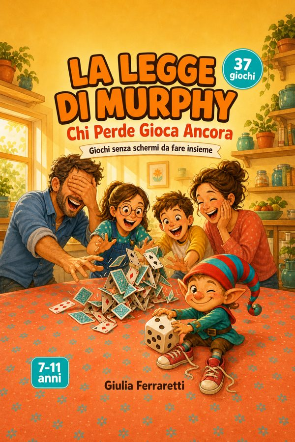

Materiali del libro
La Legge di Murphy: Chi Perde Gioca Ancora
Qui trovate tutti i materiali da stampare e i mini giochi promessi nel libro. Ogni capitolo ha il suo QR, ma potete aprirli anche da qui.
Il regalo in più: la sfida dei 30 giorni
Un calendario con 30 mini sfide di famiglia, una al giorno, e il diploma di fine sfida.
Ricevi la sfida